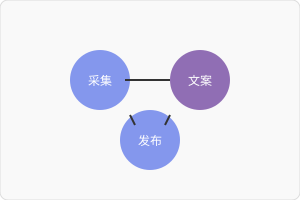
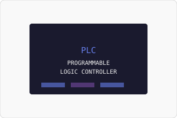

这里是我的软件项目作品集，涵盖多Agent系统、自动化工具、教学软件等方向，符合 is-a.dev 程序设计实验室要求。
90| 90| 94| 94|以下是我的主要程序设计实验，均为开源可查
116| 116| 117| 117|

符合 is-a.dev 要求的嵌套子域名设计
206| 206|指向多Agent系统（采集菌、文案猫、画师鹰、动画鱼、发布猴）
210| 210|指向微信公众号自动化系统（Markdown转换、素材上传、Webhook）
214| 214|指向PLC教学工具（TIA Portal项目、梯形图代码生成）
218| 218|以下是我在项目中使用的技术栈和工具
227| 227| 228| 228|所有项目源码已开源在 GitHub
262| 262|